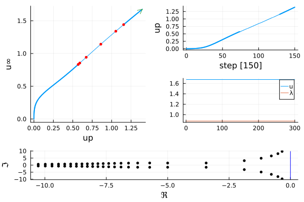
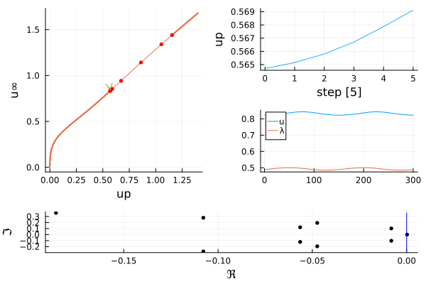
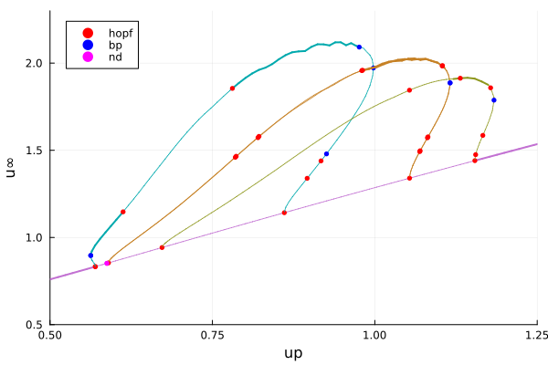

🟠 Detonation engine
This is a model of a detonation engine, a new kind of reactor developed for planes. The model[Koch] quantifies the spatio-temporal evolution of a property analogous to specific internal energy, $u(x,t)$, on a one dimensional (1D) periodic domain:
\[\left\{ \begin{gathered} \frac{\partial u}{\partial t}=\nu_{1} \frac{\partial^{2} u}{\partial x^{2}}-u \frac{\partial u}{\partial x}+k q(1-\lambda) \exp \left(\frac{u-u_{c}}{\alpha}\right)-\epsilon u^{2} \\ \frac{\partial \lambda}{\partial t}=\nu_{2} \frac{\partial^{2} \lambda}{\partial x^{2}}+k(1-\lambda) \exp \left(\frac{u-u_{c}}{\alpha}\right) -\frac{s u_{p} \lambda}{1+\exp \left(r\left(u-u_{p}\right)\right)} \end{gathered}\right.\]
Problem discretization
We start by discretizing the above PDE based on finite differences.
using Revise, ForwardDiffusing SparseArraysusing BifurcationKit, LinearAlgebra, Plotsconst BK = BifurcationKitω(u, p) = p.k * exp((u - p.uc) / p.α)β(u, p) = p.s * p.up / (1 + exp(p.r * (u - p.up)) )# utilities for plotting solutionsfunction plotsol!(x; k...) n = length(x) ÷ 2 u = @view x[1:n] v = @view x[n+1:2n] plot!(u; label="u", k...) plot!(v; label="λ", k...)endplotsol(x; k...) = (plot();plotsol!(x; k...))# nonlinearity of the modelfunction NL!(dest, U, p, t = 0) N = p.N u = @view U[1:N] λ = @view U[N+1:2N] dest[1:N] .= p.q .* (1 .- λ) .* ω.(u, Ref(p)) .- p.ϵ .* u.^2 dest[N+1:2N] .= (1 .- λ) .* ω.(u, Ref(p)) .- λ .* β.(u, Ref(p)) return destend# function which encodes the right hand side of the PDE@views function Fdet!(f, u, p, t = 0) N = p.N NL!(f, u, p) # nonlinearity mul!(f, p.Δ, u, p.ν1, 1) # put Laplacian f[1:p.N] .-= (p.D * u[1:N].^2) ./ 2 # add drift a la Burger return fendNL(U, p, t = 0.) = NL!(similar(U), U, p, t)JNL(U, p, t = 0.) = ForwardDiff.jacobian(x -> NL(x, p), U)Fdet(x, p, t = 0) = Fdet!(similar(x), x, p, t)Jdet(x, p) = sparse(ForwardDiff.jacobian(x -> Fdet(x, p), x))We can now instantiate the model
N = 300lx = 2piX = LinRange(0, lx, N)h = lx/NΔ = spdiagm(0 => -2ones(N), 1 => ones(N-1), -1 => ones(N-1) ) / h^2; Δ[1,end] = 1/h^2; Δ[end,1]=1/h^2D = spdiagm(1 => ones(N-1), -1 => -ones(N-1)) / (2h); D[1,end] = -1/(2h);D[end, 1] = 1/(2h)_ν1 = 0.0075# model parameterspar_det = (N = N, q = 0.5, α = 0.3, up = 0.0, uc = 1.1, s = 3.5, k = 1., ϵ = 0.15, r = 5.0, ν1 = _ν1, ν2 = _ν1, Δ = blockdiag(Δ, Δ), D = D, Db = blockdiag(D, D))# initial conditionsu0 = 0.5ones(N)λ0 = 0.5ones(N)U0 = vcat(u0, λ0)U0cons = vcat(copy(U0), 1.)Jacobian with sparsity detection
Writing the jacobian explicitly is cumbersome. We rely on automatic differentiation to get the jacobian.
The computation can be greatly sped up using sparse jacobian computation based on DifferentiationInterface.jl
We are now ready to compute the bifurcation of the trivial (constant in space) solution:
# bifurcation problemprob = BifurcationProblem(Fdet!, U0, (par_det..., q = 0.5), (@optic _.up); plot_solution = (x, p; k...) -> plotsol!(x; k...), record_from_solution = (x, p; k...) -> (u∞ = norminf(x[1:N]), n2 = norm(x)))prob = re_make(prob, params = (@set par_det.up = 0.56))# iterative eigen solvereig = EigArpack(0.2, :LM, tol = 1e-13, v0 = rand(2N))# eig = EigArnoldiMethod(sigma=0.2, which = BifurcationKit.LM(), x₀ = rand(2N ))# newton optionsoptnew = NewtonPar(verbose = true, eigsolver = eig)optcont = ContinuationPar(newton_options = NewtonPar(optnew, verbose = false), detect_bifurcation = 3, nev = 50, n_inversion = 8, max_bisection_steps = 25, dsmax = 0.01, ds = 0.01, p_max = 1.4, max_steps = 1000, plot_every_step = 50)br = continuation( re_make(prob, params = (@set par_det.q = 0.5)), PALC(), optcont; plot = true)Scene = title!("")
br ┌─ Curve type: EquilibriumCont
├─ Number of points: 152
├─ Type of vectors: Vector{Float64}
├─ Parameter up starts at 0.0, ends at 1.4
├─ Algo: PALC [Secant]
└─ Special points:
- # 1, hopf at up ≈ +0.56970299 ∈ (+0.56970266, +0.56970299), |δp|=3e-07, [converged], δ = ( 2, 2), step = 74
- # 2, hopf at up ≈ +0.58997697 ∈ (+0.58997631, +0.58997697), |δp|=7e-07, [converged], δ = ( 2, 2), step = 76
- # 3, hopf at up ≈ +0.67245136 ∈ (+0.67243044, +0.67245136), |δp|=2e-05, [converged], δ = ( 2, 2), step = 84
- # 4, hopf at up ≈ +0.86069748 ∈ (+0.86069748, +0.86069748), |δp|=3e-09, [converged], δ = (-2, -2), step = 102
- # 5, hopf at up ≈ +1.05349841 ∈ (+1.05349824, +1.05349841), |δp|=2e-07, [converged], δ = (-2, -2), step = 120
- # 6, hopf at up ≈ +1.15401807 ∈ (+1.15401772, +1.15401807), |δp|=3e-07, [converged], δ = (-2, -2), step = 129
- # 7, endpoint at up ≈ +1.40000000, step = 151
We have detected 6 Hopf bifurcations. Furthermore, we now study the periodic orbits branching from them.
Computing the branches of Traveling waves
The periodic orbits emanating from the Hopf points look like traveling waves. This is intuitive because the equation is mostly advective as the diffusion coefficients $\nu_i$ are small. We will thus seek for traveling waves instead of periodic orbits. The advantage is that the possible Neimark-Sacker bifurcation is transformed into a regular Hopf one which allows the study of modulated traveling waves.
As we will do the same thing 3 times, we bundle the procedure in functions. We first use the regular Hopf normal form to create a guess for the traveling wave:
function get_guess(br, nb; δp = 0.005) nf = get_normal_form(br, nb; verbose = false) pred = predictor(nf, δp) return pred.p, pred.orbit(0)endUsing this guess, we can continue the traveling wave as function of a parameter. Note that in the following code, an appropriate eigen-solver is automatically created during the call to continuation which properly computes the stability of the wave.
function computeBranch(br, nb; δp = 0.005, max_steps = 190) _p, sol = get_guess(br, nb) # traveling wave problem probTW = TWModel( re_make(br.prob, params = (getparams(br)..., up = _p)), getparams(br).Db, copy(sol), jacobian = BK.AutoDiff()) # newton parameters with iterative eigen solver # eig = EigArnoldiMethod(sigma=0.2, which = BifurcationKit.LM(),x₀ = rand(2N )) eig = EigArpack(nev = 10, which = :LM, sigma = 0.4) optn = NewtonPar(verbose = true, eigsolver = eig) # continuation parameters opt_cont_br = ContinuationPar(p_min = 0.1, p_max = 1.3, newton_options = optn, ds= -0.001, dsmax = 0.01, plot_every_step = 5, detect_bifurcation = 3, nev = 10, max_steps = max_steps) # we build a guess for the traveling wave with speed -0.9 twguess = vcat(sol, -0.9) br_wave = continuation(probTW, twguess, PALC(), opt_cont_br; # verbosity = 3, plot = true, bothside = true, record_from_solution = (x, p; k...) -> (u∞ = maximum(x[1:N]), s = x[end], amp = amplitude(x[1:N])), plot_solution = (x, p; k...) -> (plotsol!(x[1:end-1];k...);plot!(br,subplot=1, legend=false)), callback_newton = BK.cbMaxNorm(1e2), finalise_solution = (z, tau, step, contResult; k...) -> begin amplitude(z.u[N+1:2N]) > 0.01 end, )endWe can try this continuation as follows
amplitude(x) = maximum(x) - minimum(x)br_wave = computeBranch(br, 1; max_steps = 10)Scene = title!("")
Building the full diagram
branches = [computeBranch(br, i) for i in 1:3]plot(br, branches..., legend=:topleft, xlims = (0.5, 1.25), ylims=(0.5, 2.3))
References
- Koch
Koch, James, Mitsuru Kurosaka, Carl Knowlen, and J. Nathan Kutz. “Multi-Scale Physics of Rotating Detonation Engines: Autosolitons and Modulational Instabilities.” ArXiv:2003.06655 [Nlin, Physics:Physics], March 14, 2020. http://arxiv.org/abs/2003.06655.